Franchise record book · FBL
Inland Empire 66ers
Seasons covered: 2002–2002. Only games played for this franchise count.
This club has no pre-2002 history in the export, so its record book is the 2002 season to date. Rate records need 3.1 PA or 1 inning per team game.
Home runs
| # | Player | Season | Team | Home runs |
|---|---|---|---|---|
| #1 | 2002 (FBL) |  Inland Empire 66ers Inland Empire 66ers | 5 | |
| #2 | 2002 (FBL) | Inland Empire 66ers | 5 | |
| #3 | 2002 (FBL) | Inland Empire 66ers | 4 | |
| #4 | 2002 (FBL) | Inland Empire 66ers | 3 | |
| #5 | 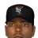 Timo Perez • | 2002 (FBL) | Inland Empire 66ers | 3 |
| #6 | 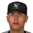 Luis Rivas • | 2002 (FBL) | Inland Empire 66ers | 3 |
| #7 | 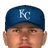 Brandon Berger • | 2002 (FBL) | Inland Empire 66ers | 2 |
| #8 | Robert Machado • | 2002 (FBL) | Inland Empire 66ers | 2 |
| #9 | 2002 (FBL) | Inland Empire 66ers | 1 | |
| #10 | 2002 (FBL) | Inland Empire 66ers | 1 |
Hits
| # | Player | Season | Team | Hits |
|---|---|---|---|---|
| #1 | 2002 (FBL) | Inland Empire 66ers | 42 | |
| #2 | 2002 (FBL) | Inland Empire 66ers | 38 | |
| #3 | 2002 (FBL) | Inland Empire 66ers | 37 | |
| #4 | 2002 (FBL) | Inland Empire 66ers | 34 | |
| #5 | Robert Machado • | 2002 (FBL) | Inland Empire 66ers | 33 |
| #6 | Luis Rivas • | 2002 (FBL) | Inland Empire 66ers | 32 |
| #7 | 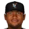 Abraham Nunez • | 2002 (FBL) | Inland Empire 66ers | 30 |
| #8 | Timo Perez • | 2002 (FBL) | Inland Empire 66ers | 26 |
| #9 | 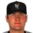 McKay Christensen • | 2002 (FBL) | Inland Empire 66ers | 21 |
| #10 | Brandon Berger • | 2002 (FBL) | Inland Empire 66ers | 14 |
RBI
| # | Player | Season | Team | RBI |
|---|---|---|---|---|
| #1 | 2002 (FBL) | Inland Empire 66ers | 21 | |
| #2 | 2002 (FBL) | Inland Empire 66ers | 21 | |
| #3 | 2002 (FBL) | Inland Empire 66ers | 21 | |
| #4 | Timo Perez • | 2002 (FBL) | Inland Empire 66ers | 17 |
| #5 | 2002 (FBL) | Inland Empire 66ers | 14 | |
| #6 | Abraham Nunez • | 2002 (FBL) | Inland Empire 66ers | 14 |
| #7 | Robert Machado • | 2002 (FBL) | Inland Empire 66ers | 11 |
| #8 | Brandon Berger • | 2002 (FBL) | Inland Empire 66ers | 9 |
| #9 | McKay Christensen • | 2002 (FBL) | Inland Empire 66ers | 9 |
| #10 | Luis Rivas • | 2002 (FBL) | Inland Empire 66ers | 9 |
Runs
| # | Player | Season | Team | Runs |
|---|---|---|---|---|
| #1 | 2002 (FBL) | Inland Empire 66ers | 24 | |
| #2 | 2002 (FBL) | Inland Empire 66ers | 21 | |
| #3 | 2002 (FBL) | Inland Empire 66ers | 21 | |
| #4 | 2002 (FBL) | Inland Empire 66ers | 17 | |
| #5 | Luis Rivas • | 2002 (FBL) | Inland Empire 66ers | 15 |
| #6 | Brandon Berger • | 2002 (FBL) | Inland Empire 66ers | 13 |
| #7 | Abraham Nunez • | 2002 (FBL) | Inland Empire 66ers | 11 |
| #8 | Timo Perez • | 2002 (FBL) | Inland Empire 66ers | 11 |
| #9 | Robert Machado • | 2002 (FBL) | Inland Empire 66ers | 9 |
| #10 | McKay Christensen • | 2002 (FBL) | Inland Empire 66ers | 8 |
Stolen bases
| # | Player | Season | Team | Stolen bases |
|---|---|---|---|---|
| #1 | 2002 (FBL) | Inland Empire 66ers | 9 | |
| #2 | McKay Christensen • | 2002 (FBL) | Inland Empire 66ers | 7 |
| #3 | 2002 (FBL) | Inland Empire 66ers | 5 | |
| #4 | Abraham Nunez • | 2002 (FBL) | Inland Empire 66ers | 5 |
| #5 | Luis Rivas • | 2002 (FBL) | Inland Empire 66ers | 5 |
| #6 | Timo Perez • | 2002 (FBL) | Inland Empire 66ers | 4 |
| #7 | Brandon Berger • | 2002 (FBL) | Inland Empire 66ers | 3 |
| #8 | 2002 (FBL) | Inland Empire 66ers | 3 | |
| #9 | 2002 (FBL) | Inland Empire 66ers | 2 | |
| #10 | 2002 (FBL) | Inland Empire 66ers | 0 |
Doubles
| # | Player | Season | Team | Doubles |
|---|---|---|---|---|
| #1 | Timo Perez • | 2002 (FBL) | Inland Empire 66ers | 11 |
| #2 | 2002 (FBL) | Inland Empire 66ers | 9 | |
| #3 | 2002 (FBL) | Inland Empire 66ers | 9 | |
| #4 | 2002 (FBL) | Inland Empire 66ers | 8 | |
| #5 | Luis Rivas • | 2002 (FBL) | Inland Empire 66ers | 8 |
| #6 | Robert Machado • | 2002 (FBL) | Inland Empire 66ers | 7 |
| #7 | Abraham Nunez • | 2002 (FBL) | Inland Empire 66ers | 6 |
| #8 | Brandon Berger • | 2002 (FBL) | Inland Empire 66ers | 4 |
| #9 | 2002 (FBL) | Inland Empire 66ers | 3 | |
| #10 | 2002 (FBL) | Inland Empire 66ers | 2 |
Triples
| # | Player | Season | Team | Triples |
|---|---|---|---|---|
| #1 | 2002 (FBL) | Inland Empire 66ers | 2 | |
| #2 | McKay Christensen • | 2002 (FBL) | Inland Empire 66ers | 2 |
| #3 | Timo Perez • | 2002 (FBL) | Inland Empire 66ers | 2 |
| #4 | 2002 (FBL) | Inland Empire 66ers | 1 | |
| #5 | 2002 (FBL) | Inland Empire 66ers | 1 | |
| #6 | Brandon Berger • | 2002 (FBL) | Inland Empire 66ers | 0 |
| #7 | 2002 (FBL) | Inland Empire 66ers | 0 | |
| #8 | 2002 (FBL) | Inland Empire 66ers | 0 | |
| #9 | 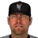 Dave Hollins • | 2002 (FBL) | Inland Empire 66ers | 0 |
| #10 | Abraham Nunez • | 2002 (FBL) | Inland Empire 66ers | 0 |
Walks
| # | Player | Season | Team | Walks |
|---|---|---|---|---|
| #1 | 2002 (FBL) | Inland Empire 66ers | 21 | |
| #2 | 2002 (FBL) | Inland Empire 66ers | 14 | |
| #3 | Brandon Berger • | 2002 (FBL) | Inland Empire 66ers | 13 |
| #4 | Abraham Nunez • | 2002 (FBL) | Inland Empire 66ers | 13 |
| #5 | 2002 (FBL) | Inland Empire 66ers | 13 | |
| #6 | 2002 (FBL) | Inland Empire 66ers | 11 | |
| #7 | McKay Christensen • | 2002 (FBL) | Inland Empire 66ers | 11 |
| #8 | Robert Machado • | 2002 (FBL) | Inland Empire 66ers | 10 |
| #9 | Luis Rivas • | 2002 (FBL) | Inland Empire 66ers | 8 |
| #10 | 2002 (FBL) | Inland Empire 66ers | 6 |
Total bases
| # | Player | Season | Team | Total bases |
|---|---|---|---|---|
| #1 | 2002 (FBL) | Inland Empire 66ers | 70 | |
| #2 | 2002 (FBL) | Inland Empire 66ers | 62 | |
| #3 | 2002 (FBL) | Inland Empire 66ers | 59 | |
| #4 | Timo Perez • | 2002 (FBL) | Inland Empire 66ers | 50 |
| #5 | Luis Rivas • | 2002 (FBL) | Inland Empire 66ers | 49 |
| #6 | 2002 (FBL) | Inland Empire 66ers | 47 | |
| #7 | Robert Machado • | 2002 (FBL) | Inland Empire 66ers | 46 |
| #8 | Abraham Nunez • | 2002 (FBL) | Inland Empire 66ers | 36 |
| #9 | McKay Christensen • | 2002 (FBL) | Inland Empire 66ers | 27 |
| #10 | Brandon Berger • | 2002 (FBL) | Inland Empire 66ers | 24 |
Batting average qualified
| # | Player | Season | Team | Batting average |
|---|---|---|---|---|
| #1 | Robert Machado • | 2002 (FBL) | Inland Empire 66ers | .295 |
| #2 | 2002 (FBL) | Inland Empire 66ers | .281 | |
| #3 | Luis Rivas • | 2002 (FBL) | Inland Empire 66ers | .274 |
| #4 | 2002 (FBL) | Inland Empire 66ers | .268 | |
| #5 | 2002 (FBL) | Inland Empire 66ers | .259 | |
| #6 | 2002 (FBL) | Inland Empire 66ers | .231 | |
| #7 | Abraham Nunez • | 2002 (FBL) | Inland Empire 66ers | .227 |
| #8 | Timo Perez • | 2002 (FBL) | Inland Empire 66ers | .183 |
| #9 | McKay Christensen • | 2002 (FBL) | Inland Empire 66ers | .179 |
On-base % qualified
| # | Player | Season | Team | On-base % |
|---|---|---|---|---|
| #1 | 2002 (FBL) | Inland Empire 66ers | .391 | |
| #2 | Robert Machado • | 2002 (FBL) | Inland Empire 66ers | .347 |
| #3 | 2002 (FBL) | Inland Empire 66ers | .325 | |
| #4 | 2002 (FBL) | Inland Empire 66ers | .324 | |
| #5 | Luis Rivas • | 2002 (FBL) | Inland Empire 66ers | .320 |
| #6 | 2002 (FBL) | Inland Empire 66ers | .317 | |
| #7 | Abraham Nunez • | 2002 (FBL) | Inland Empire 66ers | .297 |
| #8 | McKay Christensen • | 2002 (FBL) | Inland Empire 66ers | .260 |
| #9 | Timo Perez • | 2002 (FBL) | Inland Empire 66ers | .221 |
Slugging % qualified
| # | Player | Season | Team | Slugging % |
|---|---|---|---|---|
| #1 | 2002 (FBL) | Inland Empire 66ers | .459 | |
| #2 | 2002 (FBL) | Inland Empire 66ers | .446 | |
| #3 | Luis Rivas • | 2002 (FBL) | Inland Empire 66ers | .419 |
| #4 | 2002 (FBL) | Inland Empire 66ers | .413 | |
| #5 | Robert Machado • | 2002 (FBL) | Inland Empire 66ers | .411 |
| #6 | Timo Perez • | 2002 (FBL) | Inland Empire 66ers | .352 |
| #7 | 2002 (FBL) | Inland Empire 66ers | .320 | |
| #8 | Abraham Nunez • | 2002 (FBL) | Inland Empire 66ers | .273 |
| #9 | McKay Christensen • | 2002 (FBL) | Inland Empire 66ers | .231 |
OPS qualified
| # | Player | Season | Team | OPS |
|---|---|---|---|---|
| #1 | 2002 (FBL) | Inland Empire 66ers | .851 | |
| #2 | 2002 (FBL) | Inland Empire 66ers | .769 | |
| #3 | Robert Machado • | 2002 (FBL) | Inland Empire 66ers | .757 |
| #4 | Luis Rivas • | 2002 (FBL) | Inland Empire 66ers | .739 |
| #5 | 2002 (FBL) | Inland Empire 66ers | .738 | |
| #6 | 2002 (FBL) | Inland Empire 66ers | .637 | |
| #7 | Timo Perez • | 2002 (FBL) | Inland Empire 66ers | .574 |
| #8 | Abraham Nunez • | 2002 (FBL) | Inland Empire 66ers | .569 |
| #9 | McKay Christensen • | 2002 (FBL) | Inland Empire 66ers | .490 |
WAR (OOTP)
| # | Player | Season | Team | WAR (OOTP) |
|---|---|---|---|---|
| #1 | 2002 (FBL) | Inland Empire 66ers | 0.9 | |
| #2 | 2002 (FBL) | Inland Empire 66ers | 0.5 | |
| #3 | Robert Machado • | 2002 (FBL) | Inland Empire 66ers | 0.3 |
| #4 | 2002 (FBL) | Inland Empire 66ers | 0.1 | |
| #5 | Luis Rivas • | 2002 (FBL) | Inland Empire 66ers | 0.1 |
| #6 | 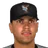 Eric Riggs • | 2002 (FBL) | Inland Empire 66ers | 0.0 |
| #7 | 2002 (FBL) | Inland Empire 66ers | 0.0 | |
| #8 | Abraham Nunez • | 2002 (FBL) | Inland Empire 66ers | 0.0 |
| #9 | 2002 (FBL) | Inland Empire 66ers | 0.0 | |
| #10 | 2002 (FBL) | Inland Empire 66ers | -0.1 |
Wins
| # | Player | Season | Team | Wins |
|---|---|---|---|---|
| #1 | 2002 (FBL) | Inland Empire 66ers | 3 | |
| #2 | 2002 (FBL) | Inland Empire 66ers | 3 | |
| #3 | Hideki Irabu • | 2002 (FBL) | Inland Empire 66ers | 3 |
| #4 | 2002 (FBL) | Inland Empire 66ers | 2 | |
| #5 | Omar Daal • | 2002 (FBL) | Inland Empire 66ers | 1 |
| #6 | 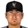 Adam Johnson • | 2002 (FBL) | Inland Empire 66ers | 1 |
| #7 | 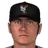 Jerrod Riggan • | 2002 (FBL) | Inland Empire 66ers | 1 |
| #8 | Joe Roa • | 2002 (FBL) | Inland Empire 66ers | 1 |
| #9 | 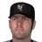 Aaron Heilman • | 2002 (FBL) | Inland Empire 66ers | 1 |
| #10 | Juan Acevedo • | 2002 (FBL) | Inland Empire 66ers | 0 |
Strikeouts
| # | Player | Season | Team | Strikeouts |
|---|---|---|---|---|
| #1 | 2002 (FBL) | Inland Empire 66ers | 60 | |
| #2 | 2002 (FBL) | Inland Empire 66ers | 37 | |
| #3 | Hideki Irabu • | 2002 (FBL) | Inland Empire 66ers | 32 |
| #4 | Omar Daal • | 2002 (FBL) | Inland Empire 66ers | 31 |
| #5 | Aaron Heilman • | 2002 (FBL) | Inland Empire 66ers | 20 |
| #6 | Adam Johnson • | 2002 (FBL) | Inland Empire 66ers | 19 |
| #7 | 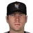 Damian Moss • | 2002 (FBL) | Inland Empire 66ers | 18 |
| #8 | 2002 (FBL) | Inland Empire 66ers | 14 | |
| #9 | Jerrod Riggan • | 2002 (FBL) | Inland Empire 66ers | 13 |
| #10 | Joe Roa • | 2002 (FBL) | Inland Empire 66ers | 13 |
Saves
| # | Player | Season | Team | Saves |
|---|---|---|---|---|
| #1 | 2002 (FBL) | Inland Empire 66ers | 8 | |
| #2 | Juan Acevedo • | 2002 (FBL) | Inland Empire 66ers | 1 |
| #3 | Hideki Irabu • | 2002 (FBL) | Inland Empire 66ers | 1 |
| #4 | Jerrod Riggan • | 2002 (FBL) | Inland Empire 66ers | 1 |
| #5 | Gene Stechschulte • | 2002 (FBL) | Inland Empire 66ers | 1 |
| #6 | 2002 (FBL) | Inland Empire 66ers | 0 | |
| #7 | 2002 (FBL) | Inland Empire 66ers | 0 | |
| #8 | Omar Daal • | 2002 (FBL) | Inland Empire 66ers | 0 |
| #9 | Adam Johnson • | 2002 (FBL) | Inland Empire 66ers | 0 |
| #10 | Damian Moss • | 2002 (FBL) | Inland Empire 66ers | 0 |
Innings
| # | Player | Season | Team | Innings |
|---|---|---|---|---|
| #1 | 2002 (FBL) | Inland Empire 66ers | 60.0 | |
| #2 | 2002 (FBL) | Inland Empire 66ers | 49.2 | |
| #3 | Omar Daal • | 2002 (FBL) | Inland Empire 66ers | 48.1 |
| #4 | Hideki Irabu • | 2002 (FBL) | Inland Empire 66ers | 42.1 |
| #5 | Joe Roa • | 2002 (FBL) | Inland Empire 66ers | 23.0 |
| #6 | Damian Moss • | 2002 (FBL) | Inland Empire 66ers | 21.2 |
| #7 | Juan Acevedo • | 2002 (FBL) | Inland Empire 66ers | 20.0 |
| #8 | 2002 (FBL) | Inland Empire 66ers | 20.0 | |
| #9 | Aaron Heilman • | 2002 (FBL) | Inland Empire 66ers | 19.2 |
| #10 | Adam Johnson • | 2002 (FBL) | Inland Empire 66ers | 17.2 |
Complete games
| # | Player | Season | Team | Complete games |
|---|---|---|---|---|
| #1 | 2002 (FBL) | Inland Empire 66ers | 1 | |
| #2 | Juan Acevedo • | 2002 (FBL) | Inland Empire 66ers | 0 |
| #3 | 2002 (FBL) | Inland Empire 66ers | 0 | |
| #4 | Omar Daal • | 2002 (FBL) | Inland Empire 66ers | 0 |
| #5 | Adam Johnson • | 2002 (FBL) | Inland Empire 66ers | 0 |
| #6 | Hideki Irabu • | 2002 (FBL) | Inland Empire 66ers | 0 |
| #7 | Damian Moss • | 2002 (FBL) | Inland Empire 66ers | 0 |
| #8 | Jerrod Riggan • | 2002 (FBL) | Inland Empire 66ers | 0 |
| #9 | Joe Roa • | 2002 (FBL) | Inland Empire 66ers | 0 |
| #10 | 2002 (FBL) | Inland Empire 66ers | 0 |
Shutouts
| # | Player | Season | Team | Shutouts |
|---|---|---|---|---|
| #1 | 2002 (FBL) | Inland Empire 66ers | 0 | |
| #2 | Juan Acevedo • | 2002 (FBL) | Inland Empire 66ers | 0 |
| #3 | 2002 (FBL) | Inland Empire 66ers | 0 | |
| #4 | Omar Daal • | 2002 (FBL) | Inland Empire 66ers | 0 |
| #5 | Adam Johnson • | 2002 (FBL) | Inland Empire 66ers | 0 |
| #6 | Hideki Irabu • | 2002 (FBL) | Inland Empire 66ers | 0 |
| #7 | Damian Moss • | 2002 (FBL) | Inland Empire 66ers | 0 |
| #8 | Jerrod Riggan • | 2002 (FBL) | Inland Empire 66ers | 0 |
| #9 | Joe Roa • | 2002 (FBL) | Inland Empire 66ers | 0 |
| #10 | 2002 (FBL) | Inland Empire 66ers | 0 |
ERA qualified
| # | Player | Season | Team | ERA |
|---|---|---|---|---|
| #1 | Omar Daal • | 2002 (FBL) | Inland Empire 66ers | 3.35 |
| #2 | 2002 (FBL) | Inland Empire 66ers | 3.44 | |
| #3 | 2002 (FBL) | Inland Empire 66ers | 4.20 | |
| #4 | Hideki Irabu • | 2002 (FBL) | Inland Empire 66ers | 6.17 |
WHIP qualified
| # | Player | Season | Team | WHIP |
|---|---|---|---|---|
| #1 | Omar Daal • | 2002 (FBL) | Inland Empire 66ers | 1.24 |
| #2 | 2002 (FBL) | Inland Empire 66ers | 1.29 | |
| #3 | 2002 (FBL) | Inland Empire 66ers | 1.33 | |
| #4 | Hideki Irabu • | 2002 (FBL) | Inland Empire 66ers | 1.44 |
K/9 qualified
| # | Player | Season | Team | K/9 |
|---|---|---|---|---|
| #1 | 2002 (FBL) | Inland Empire 66ers | 9.0 | |
| #2 | Hideki Irabu • | 2002 (FBL) | Inland Empire 66ers | 6.8 |
| #3 | 2002 (FBL) | Inland Empire 66ers | 6.7 | |
| #4 | Omar Daal • | 2002 (FBL) | Inland Empire 66ers | 5.8 |
WAR (OOTP)
| # | Player | Season | Team | WAR (OOTP) |
|---|---|---|---|---|
| #1 | 2002 (FBL) | Inland Empire 66ers | 1.7 | |
| #2 | 2002 (FBL) | Inland Empire 66ers | 1.5 | |
| #3 | Omar Daal • | 2002 (FBL) | Inland Empire 66ers | 1.2 |
| #4 | 2002 (FBL) | Inland Empire 66ers | 0.8 | |
| #5 | Aaron Heilman • | 2002 (FBL) | Inland Empire 66ers | 0.8 |
| #6 | Joe Roa • | 2002 (FBL) | Inland Empire 66ers | 0.6 |
| #7 | Juan Acevedo • | 2002 (FBL) | Inland Empire 66ers | 0.4 |
| #8 | Damian Moss • | 2002 (FBL) | Inland Empire 66ers | 0.4 |
| #9 | 2002 (FBL) | Inland Empire 66ers | 0.1 | |
| #10 | Adam Johnson • | 2002 (FBL) | Inland Empire 66ers | -0.1 |
Home runs
| # | Player | Years | Home runs |
|---|---|---|---|
| #1 | 1993–02 | 5 | |
| #2 | 1998–02 | 5 | |
| #3 | 1999–02 | 4 | |
| #4 | 2002–02 | 3 | |
| #5 | Timo Perez • | 2000–02 | 3 |
| #6 | Luis Rivas • | 2000–02 | 3 |
| #7 | Brandon Berger • | 2001–02 | 2 |
| #8 | Robert Machado • | 1996–02 | 2 |
| #9 | 1997–02 | 1 | |
| #10 | 2002–02 | 1 |
Hits
| # | Player | Years | Hits |
|---|---|---|---|
| #1 | 1993–02 | 42 | |
| #2 | 1998–02 | 38 | |
| #3 | 1999–02 | 37 | |
| #4 | 2002–02 | 34 | |
| #5 | Robert Machado • | 1996–02 | 33 |
| #6 | Luis Rivas • | 2000–02 | 32 |
| #7 | Abraham Nunez • | 1997–02 | 30 |
| #8 | Timo Perez • | 2000–02 | 26 |
| #9 | McKay Christensen • | 1999–02 | 21 |
| #10 | Brandon Berger • | 2001–02 | 14 |
RBI
| # | Player | Years | RBI |
|---|---|---|---|
| #1 | 1993–02 | 21 | |
| #2 | 1998–02 | 21 | |
| #3 | 1999–02 | 21 | |
| #4 | Timo Perez • | 2000–02 | 17 |
| #5 | 2002–02 | 14 | |
| #6 | Abraham Nunez • | 1997–02 | 14 |
| #7 | Robert Machado • | 1996–02 | 11 |
| #8 | Brandon Berger • | 2001–02 | 9 |
| #9 | McKay Christensen • | 1999–02 | 9 |
| #10 | Luis Rivas • | 2000–02 | 9 |
Runs
| # | Player | Years | Runs |
|---|---|---|---|
| #1 | 1993–02 | 24 | |
| #2 | 2002–02 | 21 | |
| #3 | 1998–02 | 21 | |
| #4 | 1999–02 | 17 | |
| #5 | Luis Rivas • | 2000–02 | 15 |
| #6 | Brandon Berger • | 2001–02 | 13 |
| #7 | Abraham Nunez • | 1997–02 | 11 |
| #8 | Timo Perez • | 2000–02 | 11 |
| #9 | Robert Machado • | 1996–02 | 9 |
| #10 | McKay Christensen • | 1999–02 | 8 |
Stolen bases
| # | Player | Years | Stolen bases |
|---|---|---|---|
| #1 | 2002–02 | 9 | |
| #2 | McKay Christensen • | 1999–02 | 7 |
| #3 | 1993–02 | 5 | |
| #4 | Abraham Nunez • | 1997–02 | 5 |
| #5 | Luis Rivas • | 2000–02 | 5 |
| #6 | Timo Perez • | 2000–02 | 4 |
| #7 | Brandon Berger • | 2001–02 | 3 |
| #8 | 1999–02 | 3 | |
| #9 | 2002–02 | 2 | |
| #10 | 1997–02 | 0 |
Doubles
| # | Player | Years | Doubles |
|---|---|---|---|
| #1 | Timo Perez • | 2000–02 | 11 |
| #2 | 1993–02 | 9 | |
| #3 | 1998–02 | 9 | |
| #4 | 1999–02 | 8 | |
| #5 | Luis Rivas • | 2000–02 | 8 |
| #6 | Robert Machado • | 1996–02 | 7 |
| #7 | Abraham Nunez • | 1997–02 | 6 |
| #8 | Brandon Berger • | 2001–02 | 4 |
| #9 | 2002–02 | 3 | |
| #10 | 2002–02 | 2 |
Triples
| # | Player | Years | Triples |
|---|---|---|---|
| #1 | 1993–02 | 2 | |
| #2 | McKay Christensen • | 1999–02 | 2 |
| #3 | Timo Perez • | 2000–02 | 2 |
| #4 | 2002–02 | 1 | |
| #5 | 1999–02 | 1 | |
| #6 | Brandon Berger • | 2001–02 | 0 |
| #7 | 1997–02 | 0 | |
| #8 | 1998–02 | 0 | |
| #9 | Dave Hollins • | 1990–02 | 0 |
| #10 | Abraham Nunez • | 1997–02 | 0 |
Walks
| # | Player | Years | Walks |
|---|---|---|---|
| #1 | 1998–02 | 21 | |
| #2 | 2002–02 | 14 | |
| #3 | Brandon Berger • | 2001–02 | 13 |
| #4 | Abraham Nunez • | 1997–02 | 13 |
| #5 | 1999–02 | 13 | |
| #6 | 1993–02 | 11 | |
| #7 | McKay Christensen • | 1999–02 | 11 |
| #8 | Robert Machado • | 1996–02 | 10 |
| #9 | Luis Rivas • | 2000–02 | 8 |
| #10 | 1997–02 | 6 |
Total bases
| # | Player | Years | Total bases |
|---|---|---|---|
| #1 | 1993–02 | 70 | |
| #2 | 1998–02 | 62 | |
| #3 | 1999–02 | 59 | |
| #4 | Timo Perez • | 2000–02 | 50 |
| #5 | Luis Rivas • | 2000–02 | 49 |
| #6 | 2002–02 | 47 | |
| #7 | Robert Machado • | 1996–02 | 46 |
| #8 | Abraham Nunez • | 1997–02 | 36 |
| #9 | McKay Christensen • | 1999–02 | 27 |
| #10 | Brandon Berger • | 2001–02 | 24 |
Batting average min 2,000 PA
| # | Player | Years | Batting average |
|---|
On-base % min 2,000 PA
| # | Player | Years | On-base % |
|---|
Slugging % min 2,000 PA
| # | Player | Years | Slugging % |
|---|
OPS min 2,000 PA
| # | Player | Years | OPS |
|---|
WAR (OOTP)
| # | Player | Years | WAR (OOTP) |
|---|---|---|---|
| #1 | 1993–02 | 0.9 | |
| #2 | 1998–02 | 0.5 | |
| #3 | Robert Machado • | 1996–02 | 0.3 |
| #4 | 2002–02 | 0.1 | |
| #5 | Luis Rivas • | 2000–02 | 0.1 |
| #6 | Eric Riggs • | 2002–02 | 0.0 |
| #7 | 1999–02 | 0.0 | |
| #8 | Abraham Nunez • | 1997–02 | 0.0 |
| #9 | 1997–02 | 0.0 | |
| #10 | 2002–02 | -0.1 |
Wins
| # | Player | Years | Wins |
|---|---|---|---|
| #1 | 1999–02 | 3 | |
| #2 | 2000–02 | 3 | |
| #3 | Hideki Irabu • | 1997–02 | 3 |
| #4 | 1991–02 | 2 | |
| #5 | Omar Daal • | 1993–02 | 1 |
| #6 | Adam Johnson • | 2001–02 | 1 |
| #7 | Jerrod Riggan • | 2000–02 | 1 |
| #8 | Joe Roa • | 1995–02 | 1 |
| #9 | Aaron Heilman • | 2002–02 | 1 |
| #10 | Juan Acevedo • | 1995–02 | 0 |
Strikeouts
| # | Player | Years | Strikeouts |
|---|---|---|---|
| #1 | 1999–02 | 60 | |
| #2 | 2000–02 | 37 | |
| #3 | Hideki Irabu • | 1997–02 | 32 |
| #4 | Omar Daal • | 1993–02 | 31 |
| #5 | Aaron Heilman • | 2002–02 | 20 |
| #6 | Adam Johnson • | 2001–02 | 19 |
| #7 | Damian Moss • | 2001–02 | 18 |
| #8 | 1995–02 | 14 | |
| #9 | Jerrod Riggan • | 2000–02 | 13 |
| #10 | Joe Roa • | 1995–02 | 13 |
Saves
| # | Player | Years | Saves |
|---|---|---|---|
| #1 | 1995–02 | 8 | |
| #2 | Juan Acevedo • | 1995–02 | 1 |
| #3 | Hideki Irabu • | 1997–02 | 1 |
| #4 | Jerrod Riggan • | 2000–02 | 1 |
| #5 | Gene Stechschulte • | 2000–02 | 1 |
| #6 | 1999–02 | 0 | |
| #7 | 2000–02 | 0 | |
| #8 | Omar Daal • | 1993–02 | 0 |
| #9 | Adam Johnson • | 2001–02 | 0 |
| #10 | Damian Moss • | 2001–02 | 0 |
Innings
| # | Player | Years | Innings |
|---|---|---|---|
| #1 | 1999–02 | 60.0 | |
| #2 | 2000–02 | 49.2 | |
| #3 | Omar Daal • | 1993–02 | 48.1 |
| #4 | Hideki Irabu • | 1997–02 | 42.1 |
| #5 | Joe Roa • | 1995–02 | 23.0 |
| #6 | Damian Moss • | 2001–02 | 21.2 |
| #7 | Juan Acevedo • | 1995–02 | 20.0 |
| #8 | 1991–02 | 20.0 | |
| #9 | Aaron Heilman • | 2002–02 | 19.2 |
| #10 | Adam Johnson • | 2001–02 | 17.2 |
Complete games
| # | Player | Years | Complete games |
|---|---|---|---|
| #1 | 1999–02 | 1 | |
| #2 | Juan Acevedo • | 1995–02 | 0 |
| #3 | 2000–02 | 0 | |
| #4 | Omar Daal • | 1993–02 | 0 |
| #5 | Adam Johnson • | 2001–02 | 0 |
| #6 | Hideki Irabu • | 1997–02 | 0 |
| #7 | Damian Moss • | 2001–02 | 0 |
| #8 | Jerrod Riggan • | 2000–02 | 0 |
| #9 | Joe Roa • | 1995–02 | 0 |
| #10 | 1995–02 | 0 |
Shutouts
| # | Player | Years | Shutouts |
|---|---|---|---|
| #1 | 1999–02 | 0 | |
| #2 | Juan Acevedo • | 1995–02 | 0 |
| #3 | 2000–02 | 0 | |
| #4 | Omar Daal • | 1993–02 | 0 |
| #5 | Adam Johnson • | 2001–02 | 0 |
| #6 | Hideki Irabu • | 1997–02 | 0 |
| #7 | Damian Moss • | 2001–02 | 0 |
| #8 | Jerrod Riggan • | 2000–02 | 0 |
| #9 | Joe Roa • | 1995–02 | 0 |
| #10 | 1995–02 | 0 |
ERA min 500 IP
| # | Player | Years | ERA |
|---|
WHIP min 500 IP
| # | Player | Years | WHIP |
|---|
K/9 min 500 IP
| # | Player | Years | K/9 |
|---|
WAR (OOTP)
| # | Player | Years | WAR (OOTP) |
|---|---|---|---|
| #1 | 1999–02 | 1.7 | |
| #2 | 2000–02 | 1.5 | |
| #3 | Omar Daal • | 1993–02 | 1.2 |
| #4 | 1995–02 | 0.8 | |
| #5 | Aaron Heilman • | 2002–02 | 0.8 |
| #6 | Joe Roa • | 1995–02 | 0.6 |
| #7 | Juan Acevedo • | 1995–02 | 0.4 |
| #8 | Damian Moss • | 2001–02 | 0.4 |
| #9 | 1991–02 | 0.1 | |
| #10 | Adam Johnson • | 2001–02 | -0.1 |